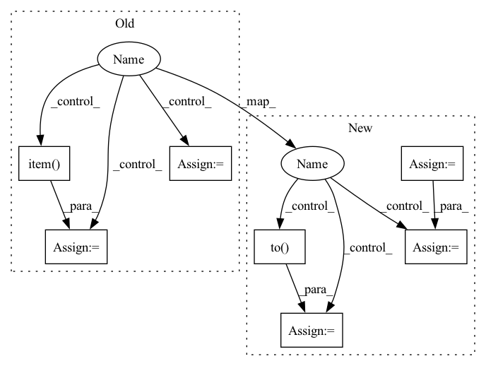

Pattern ID :12289
Before Change
train_loss = 0.0
correct = 0
group=0
for id ,(data, target) in enumerate(train_loader): // batch之前组装到data数据集里的,pytorch的MBDG统一用这种方式进行,会按序列一个个batch训练
//print("id:",id)
optimizer.zero_accum_grad() // 梯度清空
//这里执行单样本操作，但是没有参数决定是单样本，依赖这里面的数据集的组装形式（TensorDataset(data, target)），和上面的train_loader一样，默认都是一个torch一个torch来
// 数据组装中torch的维度决定你想要进行多少样本的梯度训练，取决于一开始的数据组装的结构
for iid,(X_microbatch, y_microbatch) in enumerate(TensorDataset(data, target)): //这里相当于逐样本
optimizer.zero_microbatch_grad()
output = model(torch.unsqueeze(X_microbatch.to(torch.float32), 0)) //这要是这里要做升维
loss = criterion(output, torch.unsqueeze(y_microbatch.to(torch.long), 0)) //相反，这边对于的output就不用升维了
loss.backward() //梯度求导，这边求出梯度
optimizer.microbatch_step() // 这个step做的是每个样本的梯度裁剪和梯度累加的操作
train_loss += loss.item() // 损失累加
prediction = output.argmax(dim=1, keepdim=True) // 将one-hot输出转为单个标量
correct += prediction.eq(y_microbatch.view_as(prediction)).sum().item() // 比较得到准确率
optimizer.step() // 这个做的是梯度加噪和梯度平均更新下降的操作After Change
output_batch=[]
aa=0
train_acc=0.
i= 0
for id ,(data, target) in enumerate(train_loader): // batch之前组装到data数据集里的,pytorch的MBDG统一用这种方式进行,会按序列一个个batch训练
//print("id:",id)
optimizer.zero_accum_grad() // 梯度清空
//这里执行单样本操作，但是没有参数决定是单样本，依赖这里面的数据集的组装形式（TensorDataset(data, target)），和上面的train_loader一样，默认都是一个torch一个torch来
// 数据组装中torch的维度决定你想要进行多少样本的梯度训练，取决于一开始的数据组装的结构
for iid,(X_microbatch, y_microbatch) in enumerate(TensorDataset(data, target)): //这里相当于逐样本
optimizer.zero_microbatch_grad()
output = model(torch.unsqueeze(X_microbatch.to(torch.float32), 0)) //这要是这里要做升维
loss = criterion(output, torch.unsqueeze(y_microbatch, 0))
loss.backward() //梯度求导，这边求出梯度
optimizer.microbatch_step() // 这个step做的是每个样本的梯度裁剪和梯度累加的操作
optimizer.step() // 这个做的是梯度加噪和梯度平均更新下降的操作
//训练集测试损失值和准确率
train_output=model(data.to( torch.float32) )
train_loss= criterion(train_output,target).item()
prediction = train_output.argmax(dim=1, keepdim=True) // 将one-hot输出转为单个标量
correct = prediction.eq(target.view_as(prediction)).sum().item() // 比较得到准确率
train_acc=100. * correct/len(data)
i+= 1
// print(f"batch: {i}, "f"Train set: loss: {train_loss:.4f}, "
// f"Accuracy: {correct}/{len(data)} ({train_acc:.2f}%)")In pattern: SUPERPATTERN
Frequency: 3
Non-data size: 7
Instances Fragment ID: 41648218
Project Name: jefffffu/awesome-differential-privacy-and-meachine-learning
Commit Name: 2ebbe536f3de4fe260e92dfa2a45dd3bab30a414
Time: 2022-12-06
Author: 1193147851@qq.com
File Name: train_and_validation/train_with_dp.py
M Class Name: AnonimousClass
N Class Name: AnonimousClass
M Method Name: train_dynamic_add_noise(4)
N Method Name: train_dynamic_add_noise(4)
M Parent Class:
N Parent Class:
M File Name: train_and_validation/train_with_dp.py
N File Name: train_and_validation/train_with_dp.py
M Start Line: 10
M End Line: 40
N Start Line: 13
N End Line: 45
Before Change
self.model.eval()
with torch.no_grad():
// similar to epoch() but model is in evaluation mode and no backprop
for batch in iterator:
text = batch.word
true_tags = batch.tag
pred_tags = self.model(text)
pred_tags = pred_tags.view(-1, pred_tags.shape[-1])
true_tags = true_tags.view(-1)
batch_loss = self.loss_fn(pred_tags, true_tags)
batch_acc = self.accuracy(pred_tags, true_tags)
epoch_loss += batch_loss.item()
epoch_acc += batch_acc.item()
return epoch_loss / len(iterator), epoch_acc / len(iterator)
def train(self, n_epochs):
for epoch in range(n_epochs):After Change
def evaluate(self, iterator, full_report=False):
epoch_loss = 0
true_tags_epoch = []
pred_tags_epoch = []
self.model.eval()
with torch.no_grad():
// similar to epoch() but model is in evaluation mode and no backprop
for batch in iterator:
words = batch.word.to(self.device)
chars = batch.char.to( self.device)
true_tags = batch.tag.to(self.device)
pred_tags, batch_loss = self.model(words, chars, true_tags)
pred_tags_epoch += pred_tags
true_tags_epoch += [
[tag for tag in sent_tag if tag != self.data.tag_pad_idx]
for sent_tag in true_tags.permute(1, 0).tolist() Fragment ID: 41648233
Project Name: yoseflaw/nerindo
Commit Name: a70e55e7c0489cba1290ebd51512a9e878c6e0ed
Time: 2020-08-09
Author: yosefardhitowin@gmail.com
File Name: nerindo/trainer.py
M Class Name: Trainer
N Class Name: Trainer
M Method Name: evaluate(3)
N Method Name: evaluate(2)
M Parent Class: object
N Parent Class: object
M File Name: nerindo/trainer.py
N File Name: nerindo/trainer.py
M Start Line: 55
M End Line: 69
N Start Line: 85
N End Line: 104
Before Change
epoch_loss = 0
epoch_acc = 0
self.model.train()
for batch in self.data.train_iter:
// text = [sent len, batch size]
text = batch.word
// tags = [sent len, batch size]
true_tags = batch.tag
self.optimizer.zero_grad()
pred_tags = self.model(text)
// to calculate the loss and accuracy, we flatten both prediction and true tags
// flatten pred_tags to [sent len, batch size, output dim]
pred_tags = pred_tags.view(-1, pred_tags.shape[-1])
// flatten true_tags to [sent len * batch size]
true_tags = true_tags.view(-1)
batch_loss = self.loss_fn(pred_tags, true_tags)
batch_acc = self.accuracy(pred_tags, true_tags)
batch_loss.backward()
self.optimizer.step()
epoch_loss += batch_loss.item()
epoch_acc += batch_acc.item()
return epoch_loss / len(self.data.train_iter), epoch_acc / len(self.data.train_iter)
def evaluate(self, iterator):
epoch_loss = 0After Change
def epoch(self):
epoch_loss = 0
true_tags_epoch = []
pred_tags_epoch = []
self.model.train()
for batch in self.data.train_iter:
// words = [sent len, batch size]
words = batch.word.to(self.device)
// chars = [batch size, sent len, char len]
chars = batch.char.to(self.device)
// tags = [sent len, batch size]
true_tags = batch.tag.to( self.device)
self.optimizer.zero_grad()
pred_tags_list, batch_loss = self.model(words, chars, true_tags)
pred_tags_epoch += pred_tags_list
// to calculate the loss and f1, we flatten true tags
true_tags_epoch += [
[tag for tag in sent_tag if tag != self.data.tag_pad_idx]
for sent_tag in true_tags.permute(1, 0).tolist()
] Fragment ID: 41648222
Project Name: yoseflaw/nerindo
Commit Name: a70e55e7c0489cba1290ebd51512a9e878c6e0ed
Time: 2020-08-09
Author: yosefardhitowin@gmail.com
File Name: nerindo/trainer.py
M Class Name: Trainer
N Class Name: Trainer
M Method Name: epoch(1)
N Method Name: epoch(1)
M Parent Class: object
N Parent Class: object
M File Name: nerindo/trainer.py
N File Name: nerindo/trainer.py
M Start Line: 31
M End Line: 51
N Start Line: 61
N End Line: 83